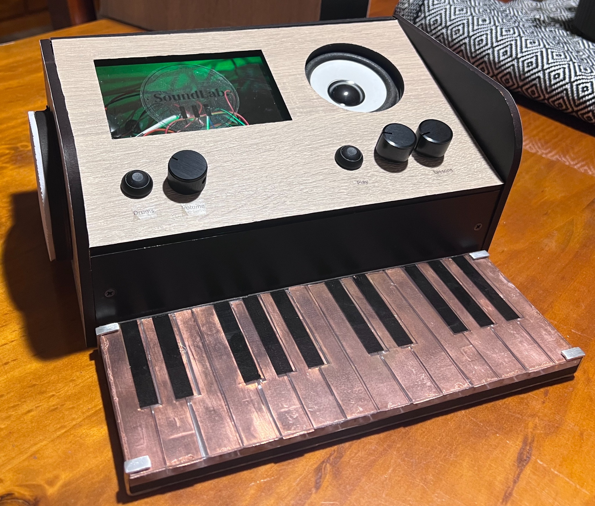
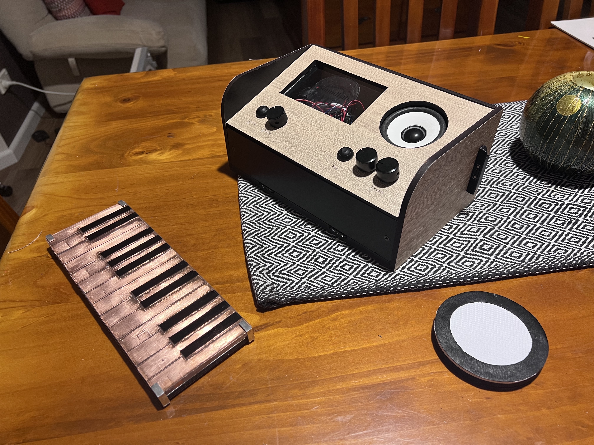
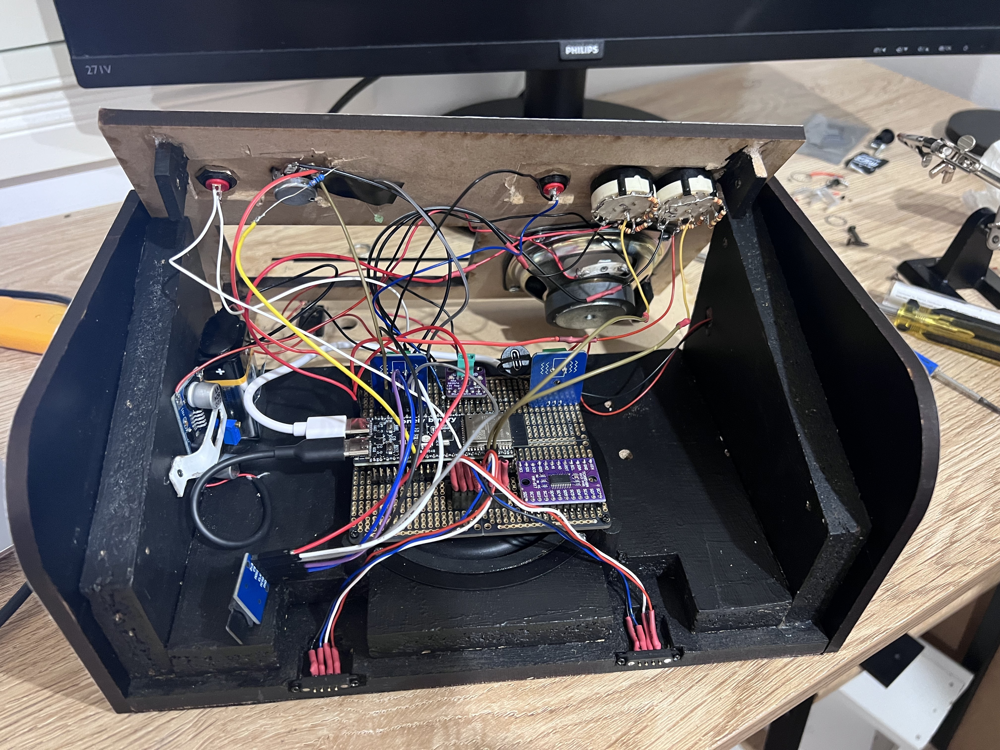

Piezo Drum Pads
Piezoelectric sensors detect the impact of each drum pad and trigger responsive traditional drum sounds.
DESIGN & TECHNOLOGY MAJOR PROJECT
An interactive electronic musical instrument designed to make traditional Sri Lankan music more accessible through touch, technology and experimentation.



PROJECT BACKGROUND
SoundLab was developed as a Design & Technology Major Project with the aim of creating a cost-effective, portable and touch-sensitive musical instrument that integrates electronics, sound, programming and product design.
The inspiration for the project came during a visit to a school in the Polonnaruwa District of Sri Lanka, where I witnessed firsthand the challenges students face in accessing musical instruments and specialist music education.
The project seeks to support the teaching and preservation of traditional Sri Lankan musical instruments, including the Gatabera, Thammattama and Yakbera, by providing an accessible digital platform for learning and exploration.
SoundLab is particularly intended to benefit students in rural and underprivileged schools, where access to traditional musical instruments and specialist music education may be limited.
HOW IT WORKS
Piezoelectric sensors detect the impact of each drum pad and trigger responsive traditional drum sounds.
Capacitive touch keys provide responsive note input for playing melodic instruments.
The central controller handles audio playback, controls and interaction.
Samples and sounds can be stored and selected for playback.
Amplification drives the speaker for a full listening experience.
USER MANUAL
Turn on the power switch at the back of SoundLab.
Press the "Drums" toggle switch to change drum sounds: Gatabera, Thammattama, Yakbera and Tabla.
Press the "Play" toggle switch to hear the pre-selected drum lesson.
Turn the "Volume" control to change the sound level.
Turn the "Keyboards" control to change between PIANO and SYNTH voices.
Turn the "Lessons" control to select from the 12 preset drum lessons.
DEVELOPMENT JOURNEY
Investigating musical instruments, electronics and user needs.
Developing the enclosure, interface and physical layout.
Building and testing the electronics and physical components.
Developing the firmware, audio playback and controls.
Testing sound, touch response, reliability and usability.
Integrating the tested components into the completed SoundLab.
GALLERY